ส่วนประกอบของคอมพิวเตอร์
**คลิ๊กที่รูปเพื่ออ่านข้อมูลเพิ่มเติม**
-
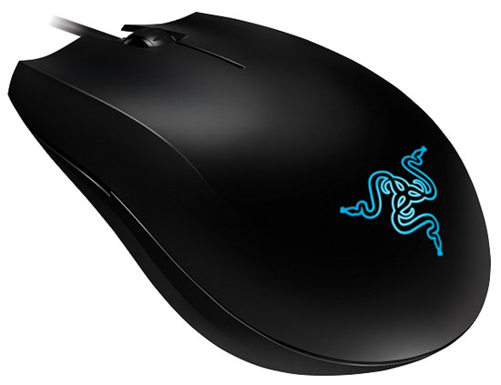
เมาส์ (Mouse)
จะเป็นอุปกรณ์ที่ให้ความรู้สึกที่ดีต่อการใช้งาน ช่วยให้การใช้งานง่ายขึ้นด้วยการใช้เมาส์เลื่อนตัวชี้ไปยังตำแหน่งต่าง ๆ บนจอภาพ หรือเรียกง่ายๆ ว่าตัวชี้ตำแหน่งนั่นเอง ในขณะที่สายตาจับอยู่ที่จอภาพก็สามารถใช้มือลากเมาส์ไปมาได้ <<อ่านเพิ่มเติม>>
-
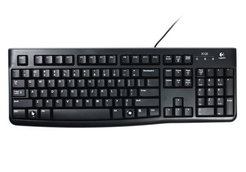
คีย์บอร์ด (Keyboard)
เป็นอุปกรณ์พื้นฐานที่คอมพิวเตอร์ทุกเครื่องจะต้องมี เนื่องจากตัวคีย์บอร์ดใช้สำหรับการพิมพ์หรือป้อมข้อมูลต่างลงไปในเครื่องคอมพิวเตอร์ <<อ่านเพิ่มเติม>>
-
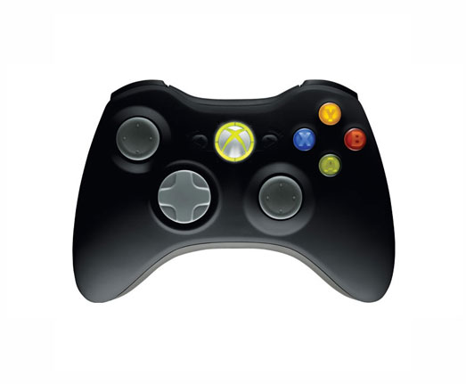
จอยสติก (Joystick)
Joystick คืออุปกรณ์ที่มีลักษณะเป็นคันโยก มีปุ่มบังคับที่ด้ามคันโยก เพื่อควบคุมตำแหน่งบนจอภาพ ได้ทุกตำแหน่งและทุกทิศทาง มักใช้ควบคุมโปรแกรมประเภทเกม ที่เป็นภาพเคลื่อนไหว วิดีโอเกม สามารถควบคุมและใช้งาน โปรแกรมคอมพิวเตอร์ได้ง่ายและสะดวก <<อ่านเพิ่มเติม>>
-
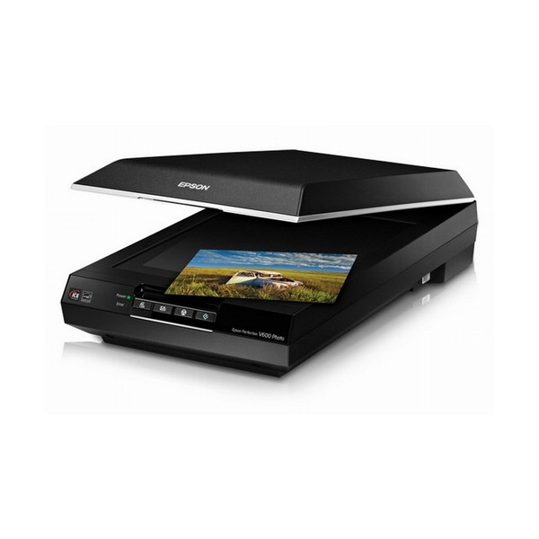
สแกนเนอร์ (Scanner)
อุปกรณ์ต่อเชื่อมคอมพิวเตอร์แบบกราฟิก ที่มีหน้าที่ ในการเปลี่ยนแปลงภาพต้นฉบับ (รูปถ่าย ตัวอักษรบนหน้ากระดาษ ภาพวาด) ให้เป็นข้อมูล เพื่อให้คอมพิวเตอร์ สามารถนำข้อมูลดังกล่าว มาใช้ประโยชน์ ในการแสดงผลที่หน้าจอ ทำให้สามารถแก้ไข ตกแต่งเพิ่มเติม และจัดเก็บข้อมูลได้ <<อ่านเพิ่มเติม>>
-

จอสัมผัส (touch screen)
touch screen สามารถเป็นได้ทั้งหน่วยรับเข้าและหน่วยส่งออก จอภาพสามารถรับข้อมูลไปประมวลผลได้โดยการสัมผัสบนบริเวณจอภาพ บริเวณจอภาพของจอสัมผัสประกอบด้วยตาข่ายของลำแสงอินฟาเรด เมื่อมีวัตถุมาสัมผัสบนจอภาพ จะมีการส่งสัญญาณไฟฟ้า ซึ่งสามารถระบุตำแหน่งบนจอภาพให้กับโปรแกรมที่กำลังทำงานอยู่ได้ <<อ่านเพิ่มเติม>>
-
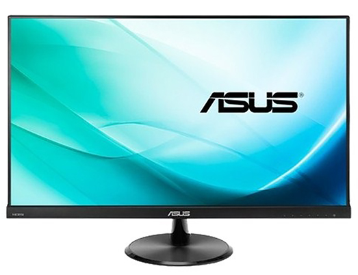
จอภาพ (Monitor)
ใช้ แสดงข้อมูลหรือผลลัพธ์ให้ผู้ใช้เห็นได้ทันที มีรูปร่างคล้ายจอภาพของโทรทัศน์ บนจอภาพประกอบด้วย จุดจำนวนมาก เรียกจุดเหล่านั้นว่า พิกเซล (Pixel) ถ้ามีพิกเซลจำนวนมากก็จะทำให้ผู้ใช้มองเห็นภาพบนจอได้ชัดเจนมากขึ้น <<อ่านเพิ่มเติม>>
-
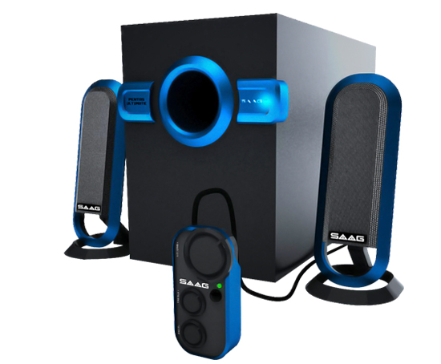
ลำโพง (Speaker)
เพื่อให้ผู้ใช้สามารถฟังเพลงในขณะทำงาน หรือให้เครื่องคอมพิวเตอร์รายงานเป็นเสียงให้ทราบเมื่อเกิดปัญหาต่าง ๆ เช่น ไม่มีกระดาษในเครื่องพิมพ์ เป็นต้น รวมทั้งสามารถเล่นเกมส์ที่มีเสียงประกอบ ได้อย่างสนุกสนาน โดยลำโพงจะมีหน้าที่ในการแปลง สัญญาณจากคอมพิวเตอร์ให้ เป็นเสียง <<อ่านเพิ่มเติม>>
-
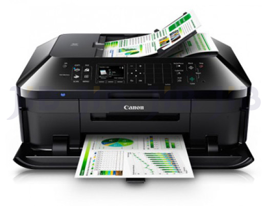
เครื่องพิมพ์ (Printer)
เป็นอุปกรณ์ที่นิยมใช้กันมาก และมีให้เลือกหลากหลายชนิดขึ้นกับคุณภาพและความละเอียดของการพิมพ์ ความเร็วในการพิมพ์ ขนาดกระดาษสูงสุดที่สามารถพิมพ์ได้ และเทคโนโลยีที่ใช้ในการพิมพ์ <<อ่านเพิ่มเติม>>
-

ซีพียู (CPU)
Labore et dolore magna aliqua. Ut enim ad <<อ่านเพิ่มเติม>>
-

รอม (ROM)
เป็นหน่วยความจำแบบสารกึ่งตัวนำชั่วคราวชนิดอ่านได้อย่างเดียว ใช้เป็นสื่อบันทึกในคอมพิวเตอร์ เพราะไม่สามารถบันทึกซ้ำได้ (อย่างง่ายๆ) เป็นความจำที่ซอฟต์แวร์หรือข้อมูลอยู่แล้ว <<อ่านเพิ่มเติม>>
-
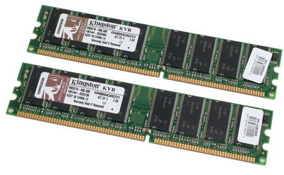
แรม (RAM)
เป็นหน่วยความจำหลัก ที่ใช้ในระบบคอมพิวเตอร์ยุคปัจจุบัน หน่วยความจำชนิดนี้ อนุญาตให้เขียนและอ่านข้อมูลได้ในตำแหน่งต่างๆ อย่างอิสระ <<อ่านเพิ่มเติม>>
-
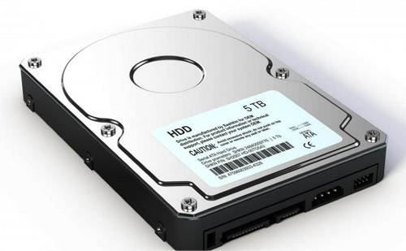
ฮาร์ดดิสก์ (Harddisk)
เป็นแผ่นพลาสติกที่เคลือบด้วยสารสะท้อนแสงมีเส้นผ่านศูนย์กลางประมาณ 5 นิ้ว การอ่านและเขียนข้อมูลจะใช้ลำแสงเลเซอร์ส่องและสะท้อนกลับ <<อ่านเพิ่มเติม>>
-
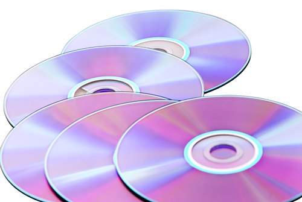
แผ่นซีดี (Compact Disc :CD)
เป็นอุปกรณ์บันทึกข้อมูลที่ประกอบด้วยแผ่นบันทึกแบบแข็งเคลือบด้วยสารแม่เหล็กที่ผิวทั้งสองด้านจำนวนหลายแผ่นเรียงซ้อนกัน มีหัวอ่านหนึ่งหัวต่อหนึ่งด้านของแผ่นบันทึกข้อมูล <<อ่านเพิ่มเติม>>
-
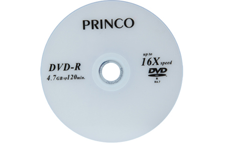
แผ่นดีวีดี (Digital Versatile Disc:DVD)
ได้ถูกพัฒนาต่อเนื่องมาจากแผ่นซีดี ทำให้มีความจุของข้อมูลสูงกว่าแผ่นซีดีมาก สำหรับแผ่นดีวีดีที่ผลิตมาจากโรงงาน จะสามารถอ่านได้เพียงอย่างเดียว เรียกว่าดีวีดีรอม (DVD-ROM) มีความจุสูงถึง 4.7 กิกะไบต์และ 8.5 กิกะไบต์ <<อ่านเพิ่มเติม>>
-
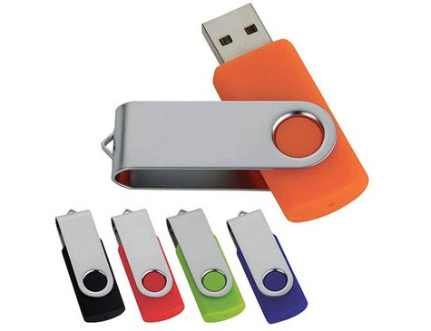
แฟลชไดร์ฟ (flash drive)
ป็นหน่วยความจำแบบแฟลชที่ออกแบบให้สามารถเสียบต่อกับเครื่องคอมพิวเตอร์ผ่านพอร์ตยูเอสบีได้โดยตรง มีขนาดเล็ก พกพาสะดวก <<อ่านเพิ่มเติม>>
-
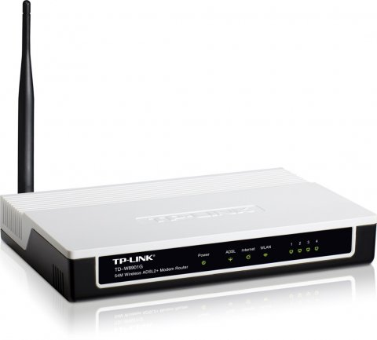
โมเด็ม (Modem)
โมเด็มเป็นฮาร์ดแวร์ที่ทำหน้าที่แปลงสัญญาณแอนะล็อกให้เป็นสัญญาณดิจิ ตัล เมื่อข้อมูลถูกส่งมายังผู้รับละแปลงสัญญาณดิจิตัลให้เป็นแอนะล็อก เมื่อต้องการส่งข้อมูลไปบนช่องสื่อสาร <<อ่านเพิ่มเติม>>
-
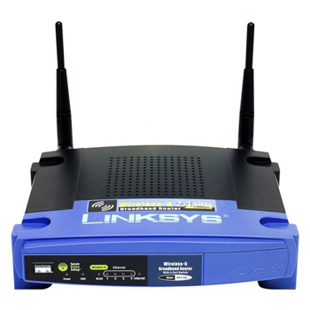
เราเตอร์ (Router)
เราเตอร์เป็นอุปกรณ์ในระบบเครือข่ายที่ทำหน้าที่เป็นตัวเชื่อมโยงให้เครือ ข่ายที่มีขนาดหรือมาตรฐานในการส่งข้อมูลต่างกัน สามารถติดต่อแลกเปลี่ยนข้อมูล <<อ่านเพิ่มเติม>>
-
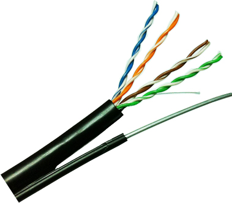
สายสัญญาณ
เป็นสายสำหรับเชื่อมต่อเครื่องคอมพิวเตอร์ต่างๆในระบบเข้าด้วยกัน หากเป็นระบบที่มีจำนวนเครื่องมากกว่า 2 เครื่องก็จะต้องต่อผ่านฮับอีกทีหนึ่ง โดยสายสัญญาณสำหรับเชื่อมต่อเครื่องในระบบเครือข่าย <<อ่านเพิ่มเติม>>